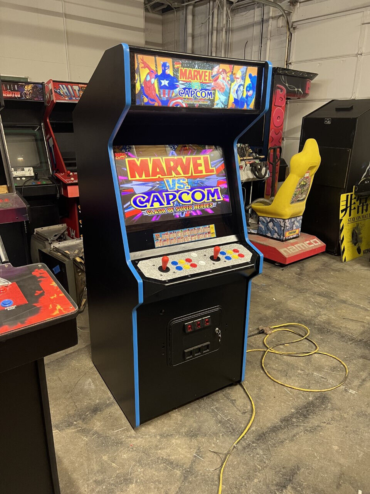
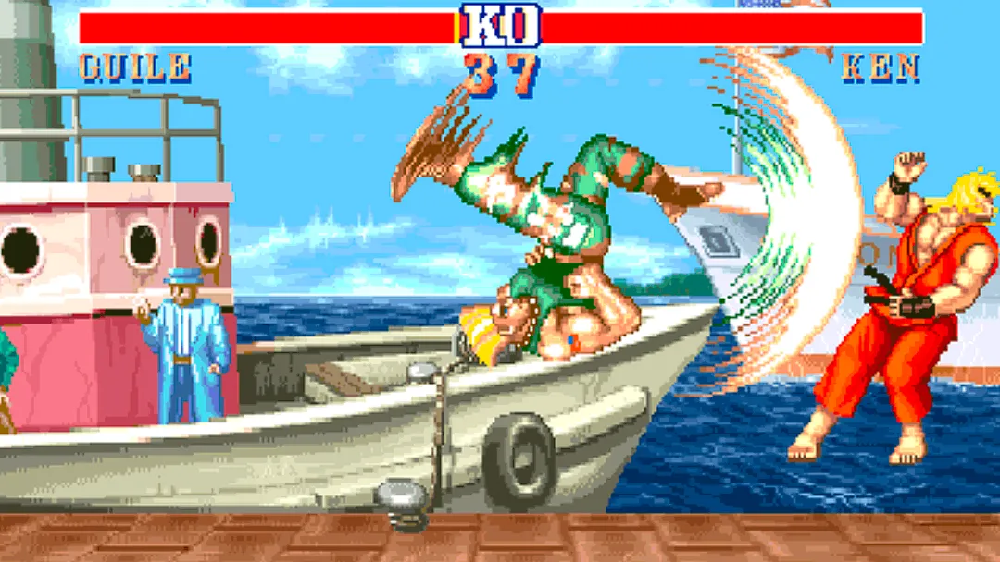

¿Qué es Capcom?
Capcom es una compañia de videojuegos la cual fue fundada en Japón en el año 1979, iniciando como una empresa la cual manufacturaba y distribuia máquinas de videojuegos y posteriormente crearon una división dedicada al desarollo de videojuegos.
Franquicias de Capcom
Capcom al ser una desarolladora y distribuidora de videojuegos a creado multiples franquicias con las cuales ha logrado tener exito, Capcom en los noventas era principalmente conocida por 2 de sus franquicias mas famosas incluso actualmente: Mega man, un juego de scroll lateral en el cual la estructura del juego consta cruzar un grupo de stages en el orden que desees y al vencer al jefe de esta te daba el arma que usa, y Street Fighter, un juego de peleas el cual con su segunda entrega definió varias cosas del género que estan al día de hoy aun presentes en este, pero desde entonces han tenido 2 franquicias las cuales se volvieron más populares: Resident Evil, la cual nacio como un survival horror en la época del PS1 y Monster Hunter, un juego en el cual tu principal objetivo es ir a cazar mounstros y forjar equipamento con las partes de estos para ir a enfrentar mounstros mas fuertes, entre otras Franquicias estan:
- Devil May Cry
- Ace Attorney
- Ghost n Goblins
- Onimusha
- Viewtiful Joe
- Final Fight
- Dead Rising
- etc...

Juegos más vendidos de Capcom
Cada termino de año fiscal capcom actualiza una página en la que publican sus platinum titles, que es la lista de todos los juegos que han publicado y lograron vender más de un millon de unidades al menos, según esa lista, actualmente en 2023 estos son los 10 videojuegos que han publicado y más han vendido.
- Monster Hunter World
- Monster Hunter Rise
- Resident Evil 2 Remake
- Resident Evil 7
- Resident Evil 5
- Resident Evil 6
- Resident Evil Village
- Resident Evil 3 Remake
- Street Fighter 5
- Devil May Cry 5
Aclaración de la lista
Cabe aclarar que en la página ponen como 5to puesto Monster Hunter World: Iceborne, pero este es un DLC para Monster Hunter World, es por eso que opte en saltaremelo, igualmente, en el caso de street fighter 2, solo toma en cuenta las ventas individuales de cada versión y no el combinado.

Géneros de las franquicias de Capcom
Una de las fortalezas de Capcom como developer es el hecho de que muchas de sus franquicias pertenecen a géneros de videojuegos muy distintos entre ellos, por lo cual ofrecen una variedad amplia para escoger, para dar algunos ejemplos, aqui se van a enlistar algunas de sus franquicias y su respectivo género.
| Mega man | Street Fighter | Resident Evil | Monster Hunter | Devil May Cry | Ace Attorney | Final Fight | Lost Planet |
|---|---|---|---|---|---|---|---|
| Platformer | Peleas | Horror | Acción | Hack n slash | Novela Visual | Beat em up | Shooter |
Como se puede observar en la tabla de arriba, existe un número amplio de géneros que cubre la compañia, ademas de que en el caso de Devil May Cry, esta franquicia fue la que definio las bases de lo que se pasaría a conocer como el género hack n slash, o como tyambien se le llama a veces, Character Action game, debido a esto es que Capcom logro cultivar un grupo de jugadores los cuales disfrutan de sus juegos en general, y tiene el status como una de las compañias third party más importantes de la industria.
Parte del legado de Capcom
Capcom ha sido una compañia que ha dejado mucho su marca en la industria, debido a que lleva desarollando software desde 1983 esto le dio el beneficio de pocisionarse en el mapa cuando la industria era aún joven, Mega Man marco a mucha gente en la época de la NES y eso se puede observar claramente cuando vemos como el mercado de los juegos indies tiene varios exponentes en los cuales se nota una muy clara inspiración de estos juegos, como lo es el caso de Shovel Knight, uno de los casos mas notorios de exito indie gracias a que este juego impulso el crecimiento de este mercado.

Street Fighter tambien es a día de hoy posiblemente el juego de peleas que mas gente ubica, curiosamente, su primera entrega no marco tanto a la industria, no fue si no hasta la segunda que esta marco al género, fue el juego que creo los combos, mecánica fundamental del género, además de que el primero puso el ambiente del torneo de peleas, otra cosa que es común de ver en el género, si no fuera por Street Fighter posiblemente los juegos de pelea a dia de hoy serían muy distintos.
Monster Hunter si bien tardo en ganar popularidad en occidente, logrando poscisionarse bien en el mercado hasta que salio Monster Hunter World, es una franquicia la cual siempre fue inmensamente popular en Japón, siendo un fenómeno de ventas enorme en ese pais, actualmente han empezado a salir juegos los cuales toman a la franquicia como una fuerte inspiración, agarrando su estructura de juego y aplicandola, ya que algo que sabe hacer bien Monster Hunter es el mantener a sus jugadores metidos en sus juegos.